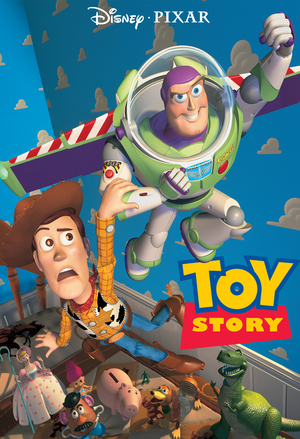
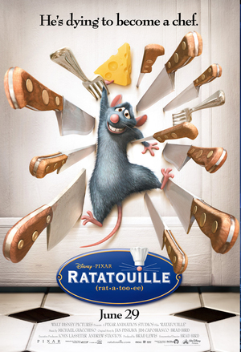
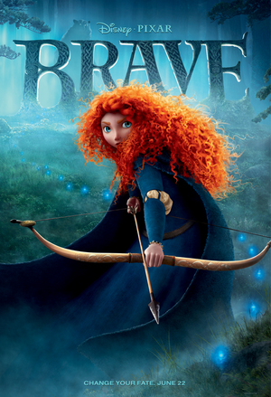

LUXO JR
A baby lamp finds a ball to play with and it's all fun and games until the ball bursts. Just when the elder Luxo thinks his kid will settle down for a bit, Luxo Jr. finds another ball—ten times larger.
"Luxo Jr." has a great parent in the larger lamp. Even though Jr. is a bit unpredictable, the elder Luxo gives him room to grow and explore. And the tiny light has no problem with that.
When John Lasseter was learning how to make models, he chose the nearest, easiest subject: an architect's lamp sitting on his desk. He started moving it around in the animation system like it was alive, and it eventually became a Pixar short that was nominated for an Academy Award®.
Coco
Despite his family’s baffling generations-old ban on music, Miguel (voice of newcomer Anthony Gonzalez) dreams of becoming an accomplished musician like his idol, Ernesto de la Cruz (voice of Benjamin Bratt). Desperate to prove his talent, Miguel finds himself in the stunning and colorful Land of the Dead following a mysterious chain of events. Along the way, he meets charming trickster Hector (voice of Gael García Bernal), and together, they set off on an extraordinary journey to unlock the real story behind Miguel's family history.
Incredibles 2
Everyone’s favorite family of superheroes is back in “Incredibles 2” – but this time Helen (voice of Holly Hunter) is in the spotlight, leaving Bob (voice of Craig T. Nelson) at home with Violet (voice of Sarah Vowell) and Dash (voice of Huck Milner) to navigate the day-to-day heroics of “normal” life. It’s a tough transistion for everyone, made tougher by the fact that the family is still unaware of baby Jack-Jack’s emerging superpowers. When a new villain hatches a brilliant and dangerous plot, the family and Frozone (voice of Samuel L. Jackson) must find a way to work together again—which is easier said than done, even when they’re all Incredible.

Toy Story
Ever wonder what toys do when people aren't around? Toy Story answers that question with a fantastic fun-filled journey, viewed mostly through the eyes of two rival toys – Woody, the lanky, likable cowboy, and Buzz Lightyear, the fearless space ranger. Led by Woody, Andy's toys live happily in his room until Andy's birthday brings Buzz Lightyear onto the scene. Afraid of losing his place in Andy's heart, Woody plots against Buzz.
But when circumstances separate Buzz and Woody from their owner, the comically-mismatched duo eventually learn to put aside their differences, and they find themselves on a hilarious adventure-filled mission where the only way they can survive is to form an uneasy alliance.

A Bug's Life
Meet Flik. Independent-thinker ant. The only insect capable of throwing a kink in the food chain. After one of Flik's inventions goes terribly wrong, he embarks on a mission to help save the colony from a gang of freeloading grasshoppers in order to get back in good graces with the Queen. But when the group of "warrior bugs" that Flik recruits turns out to be a bumbling circus troupe, he must believe in himself and his inventions to save Ant Island once and for all.

Monsters, Inc.
There's a reason why there are monsters in children's closets—it's their job. Monsters, Inc. is the most successful scream-processing factory in the monster world, and there is no better Scarer than James P. Sullivan. But when "Sulley" accidentally lets a little human girl into Monstropolis, life turns upside down for him and his buddy Mike.

Finding Nemo
In the colorful and warm tropical waters of the Great Barrier Reef, a Clown Fish named Marlin lives safe and secluded in his anemone home with his only son, Nemo. Fearful of the ocean and its unpredictable risks, he struggles to protect his son. Nemo, like all young fish, is eager to explore the mysterious reef. When Nemo is unexpectedly taken far from home and thrust into a tacky dentist’s office fish tank, Marlin finds himself the unlikely hero on an epic journey to rescue his son.

Ratatouille
A rat named Remy dreams of becoming a great chef despite his family's wishes, and the obvious problem of being a rat in a decidedly rodent-phobic profession. When fate places Remy in the sewers of Paris, he finds himself ideally situated beneath a restaurant made famous by his culinary hero, Auguste Gusteau. Remy's passion for cooking soon sets into motion a hilarious and exciting rat race that turns the world of Paris upside down.

WALL-E
What if mankind had to leave Earth and somebody forgot to turn the last robot off? After hundreds of years doing what he was built for, WALL•E discovers a new purpose in life when he meets a sleek search robot named EVE. EVE comes to realize that WALL•E has inadvertently stumbled upon the key to the planet's future, and races back to space to report to the humans. Meanwhile, WALL•E chases EVE across the galaxy and sets into motion one of the most imaginative adventures ever brought to the big screen.

Up
A 78-year-old curmudgeonly balloon salesman, is not your average hero. When he ties thousands of balloons to his house and flies away to the wilds of South America, he finally fulfills his lifelong dream of adventure. But after Carl discovers an 8-year-old stowaway named Russell, this unlikely duo soon finds themselves on a hilarious journey in a lost world filled with danger and surprises.

Brave
Since ancient times, stories of epic battles and mystical legends have been passed through the generations across the rugged and mysterious Highlands of Scotland. A new tale joins the lore when the courageous Merida confronts tradition and challenges destiny to change her fate.
Cars 3
Blindsided by a new generation of blazing-fast racers, the legendary Lightning McQueen (voice of Owen Wilson) is suddenly pushed out of the sport he loves. To get back in the game, he will need the help of an eager young race technician with her own plan to win, inspiration from the late Fabulous Hudson Hornet, and a few unexpected turns. Proving that #95 isn’t through yet will test the heart of a champion on Piston Cup Racing’s biggest stage!
{kind=link}
{kind=link}
{kind=link}
{kind=link}
{kind=link}
{kind=link}